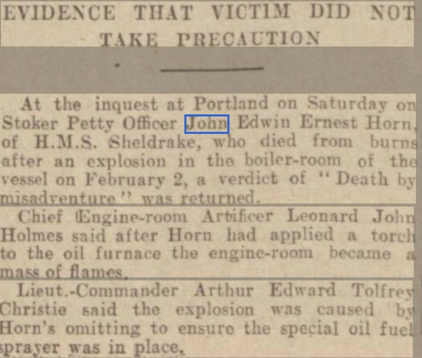
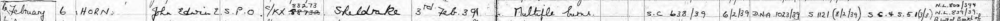
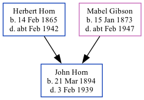

John Edwin Ernest Horn 1894 - 1939
[ Home ] | [ Calendar ] | [ Surnames Index ] | [ Family History ]A laborer and the son of Herbert Horn (a carter) and Mabel Gibson, John Horn, the second cousin twice-removed on the father's side of Nigel Horne, was born in Margate, Kent, England on Mar 21, 18941 and baptized there at St John The Baptist Church on Apr 16, 1894.
Throughout his life, he lived on 6 Grange Road in Margate on Mar 31, 19014; and on 84 Byron Road in Margate on Apr 2, 19115. He served in the navy from Jan 22, 1913 to Sep 6, 1928. John Edwin Ernest Horn appeared in the Birmingham Daily Post on 6 Mar 1939..
He died on Feb 3, 1939 at Naval Hospital, Portland Harbour, Portland, Dorset, England2,3 (multiple burns from accident on HMS Sheldrake).
Parents
- Herbert James was born on Feb 14, 1865
- Mabel Ellen was born on Jan 15, 1873
Citations
- Kent, Canterbury Archdeaconry baptisms 1538-1912 - Findmypast
- England & Wales deaths 1837-2007 - Findmypast
- UK, British Army and Navy Birth, Marriage and Death Records
- 1901 England, Wales & Scotland Census - Findmypast (was age 7 and the son of the head of the household)
- 1911 Census for England & Wales - Findmypast (was age 17 and the son of the head of the household)
Media
Thanet Advertiser - 7 Feb 1939

Birmingham Daily Post 6 Mar 1939

John Horn - Probate

John Horn - Naval Death Record

1911 Census for England & Wales - GBC/1911/RG14/04491/0861/3
Kent, Canterbury Archdeaconry baptisms 1538-1912 - GBPRS/CANT/B/96278938
England & Wales births 1837-2006 - BMD/B/1894/2/AZ/000279/242
British Royal Navy Seamen 1899-1924 Transcription - GBM-ADM188-244849
1901 England, Wales & Scotland Census - GBC/1901/0007429439
Kent, Canterbury Archdeaconry baptisms - GBPRS/CANT/B/96227916
England & Wales deaths 1837-2007 - BMD/D/1939/1/AZ/000543/134
People in the News - BL_0000619_19390306_279_173
England Births & Baptisms 1538-1975 - R_884646748
Family Tree
Generated by Ged2Site. Last updated on Jul 20, 2025